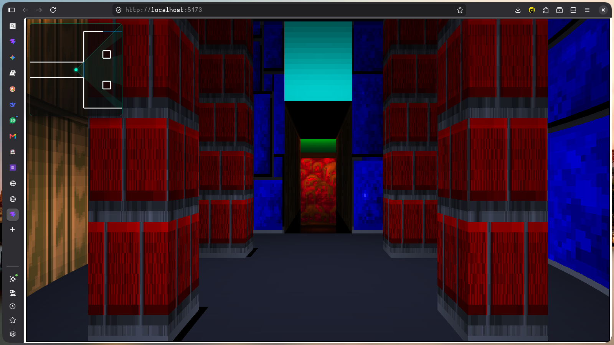

ORC (Graphics & Simulation Engine)
A custom graphics rendering pipeline migrated from a 2D raycaster to a complete 3D BSP-driven pipeline using WebGL2. Features true Z-coordinates, billboarded sprites, and custom convex/concave sector drawing tools.
View Source Code →